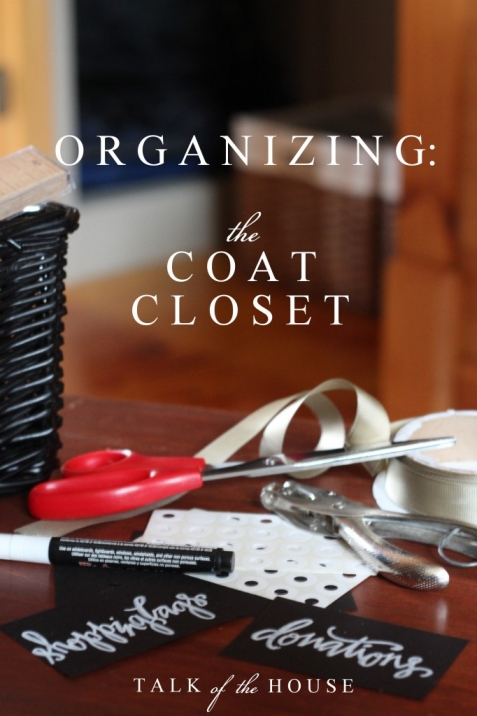
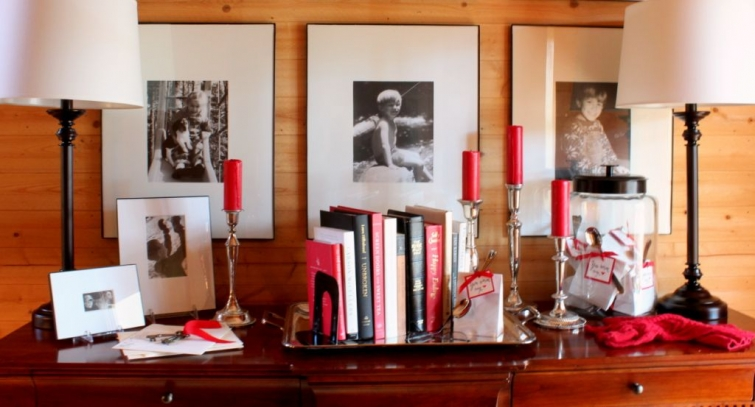
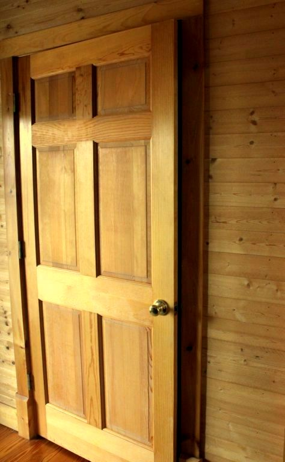

.png)
.PNG)
.PNG)
.PNG)
.PNG)
.PNG)
.JPG)
.JPG)
.PNG)
.PNG)


Can you believe it has already been one month since we said, Happy New Year? Goodness, January flew by in a cold blur! How are you doing with your new year’s resolutions? I know a lot of people made a resolution to be better organized, and they tried to accomplish it in the month of January. I couldn’t do that. First, the word “resolution” sounds sooooo serious to me, and if you break it you are doomed to the-land-of-resolution-failure. So I made goals…less pressure that way.
Secondly, I have been doing a lot of thinking about organization around here. A LOT. And you know once you start one organizing project, it kind of dominoes into another and then another and another. There was no way I was going to be “more organized” in the month of January alone. So my blogging and home goal for the year is to work on one organization project a month, and then share it with you on the first of the following month. (Yes, I have that many projects.) So Happy First Day of February! (We’ll see how well I do with this goal. 🙂 )Now let’s get to the organization of the coat closet. That piece of furniture above (with last year’s Valentine’s decorating) has a door right across from it in our little entryway. Behind that door is our coat closet.

For years, it just held coats, ski wear, and a few other random things. (I have since sold the wicker tv trays in a yard sale.)
 I kept thinking about that closet and how we just weren’t making the most use of its space. Too much empty wasted space there, and you sure don’t want to waste valuable closet space. So my husband and I talked about what we could do to improve its use, and he came up with the idea of adding some shelves at the end of it. A short time later…
I kept thinking about that closet and how we just weren’t making the most use of its space. Too much empty wasted space there, and you sure don’t want to waste valuable closet space. So my husband and I talked about what we could do to improve its use, and he came up with the idea of adding some shelves at the end of it. A short time later…
he had these built in it.
Pretty good, huh? I had been storing all the throw pillows and drapes that get changed out around here in our master bedroom closet causing it to be quite crowded. So I moved all of them to the coat closet, and I put all the ski wear in the master bedroom closet. (Sorry for the overexposed photography. 🙁 )
It worked okay for awhile, but eventually it ended up looking like this mess.
So this wasn’t really working, and it didn’t make logical sense. In my crazy brain, storage should be smart. ( My husband thinks I overthink things. He says, “Storage is storage, and it shouldn’t matter where you put things.” I disagree.) To be smart, storage should:
- Be located in an area where you use it (if possible).
- Be easy to access when you need it.
- Make the most use of its space.
- Be attractive.
It wasn’t really doing much of any of those things for me. Time to rethink. What should go in a coat closet? Coats and winter things! And things we don’t need very often…or things we need when we are near that door. That made sense to me. So out came the pillows and drapes. In came the ski wear that was in the master bedroom closet, and all the assorted winter things that go with it.
I put the ski clothes on the upper shelf and put the hats and gloves in baskets with labels (easy to access and attractive. 🙂 )
It had not been easy to get to the pillows and drapes out of there as often as I needed them, so since luggage is not used that frequently, I moved it to the coat closet (out of the bedroom closet, too.)
And I had been storing a bag for Goodwill in the master bedroom closet. It made more sense to have it close to the door to take when you leave (and more centrally located than a bedroom) so I put a basket for it in there. I also moved all the shopping bags that we had been saving under the sink to a basket in there. Definitely an improved location for them!
So now the closet seems a smarter use of the space to me. (Maybe not to my husband.) I know you minimalist probably like the closet the way it was before the shelves were even added, but we are always in need of more storage space around here. (There is not even a linen closet in this house – so I have to be creative when it comes to storage.) I am thinking about painting it back white so that there is more light in it.
You might be wondering where the pillows and curtains are going, right? The answer is…I am not sure. 🙂 Right now they are in a pile in the playroom. But my husband has finished the floor in the room over the garage (yippee!) and it is just about at the point of having a closet full of his things moved up there. When those things gets moved I will have a closet for all my “house project” things, and that is where they will find a home. (double yippee!) But for now, I have a January project finished.
And I have a master bedroom closet with many things removed. So now I can work on making it a more organized area this month. (The domino effect is in full force!)
What are you working on this weekend? Any organization projects? Or are you getting ready for a Super Bowl party?
We’d love to hear!


.PNG)
Hi Kelly,
We’re lacking for closets and storage here too! I think the closet looks great. What I might suggest is to get one of those portable closets for the room above the garage for your extra linens and pillows. They’d be protected and still accessible.
Good luck with all the organizing. You’re my hero!
I love what you did to the closet. I agree with you. Organized does mean being located in an area where you use it, making the most use of its space, easy access and attractive. Especially the attractive since I am very visual.
I have so many projects I want to work on it isn’t even funny! Some days I wish I could just take everything out of my house and just start over. haha That will never happen! The guest/kids bathroom is in much need of a redo! Not only a redecorating but organizing to. I hate to open the cabinets and see all the cleaning products and medicines and such. My problem now is I have so many ideas (thanks to Pinterest) I can’t decide which I want to use. lol
———————————————————–
I get to that point too Jayne…totally overwhelmed so much so that I don’t know where to start. It is like that saying, “My brain has too many tabs open!” Writing it all down and prioritizing it seems to be the only way I can deal with all the zillions of ideas running around in my head. 🙂
Kelly
Funny you should do a post on your closet. I was searching for a special scarf and gloves this Thursday. Our coat closet is rather organized but it could definitely use a little tweaking too. Kelly,you are such an inspire. Your husband must love wood working, with all the projects you have going. I have a very handy husband as well, but would have to do a bit of sweet talking. I love your use of baskets all the time. I need to go shopping for a few. I think I will be busy on our snowy Tuesday. Thanks for the inspire.
Debra
Kelly,
You are so lucky to have such a talented husband on hand. 🙂 He did a great job with the closet shelves. I like your luggage storage…it does seem more logical and less hassle to retrieve than storing the pillows and seasonal curtains.
I’m forever working on being more organized…our home is small and we need to pare down whenever possible and make sure we maximize use of our available space. This post inspired me and I’ll look forward to monthly organizational tips from you.
xo,
Karen
Oh! To have a coat closet..you don’t know how great that sounds to me. This old farmhouse has but two closets. One of the bedrooms doesn’t even have a closet and there are none at the entry doors either. I use wall hooks in the back porch and store out of season stuff in the master bedroom closet. I also don’t have a “linen closet” so I have a large cabinet behind the door in the master bedroom that holds all the linens, towels and various medicines/healthcare/grooming supplies. There is never enough room! I’m making chili for supper and working on old sewing projects that for one reason or another haven’t been finished before now. The sewing has been satisfying. I made some fleece footed pajamas for the infant grand kids and I’m now working on finishing up a quilted sweatshirt jacket. The jacket is really turning out cute and I’m looking forward to wearing it this spring. Oh how I am longing for SPRING!!
Kelly – your entry closet looks wonderful. My kind of closet. Beautiful, organized, smart solution (because if it isn’t a “smart” solution, then it ends up not working, right?) and easy to keep up. My yearly goal that I’ve had for years is always the same – get at least one thing organized during the year. I always get it done. Unfortunately, my problem is keeping it organized. If I were by myself, it wouldn’t be a problem, it’s my family that doesn’t care if our house is organized or not. My solution – just go with the flow. It’s not worth stressing over. I know that someday I will have an organized home. It’ll happen!
Kelly – Looks wonderful and a great motivator. Can you share where you got the baskets that you used on the shelf; what size they are and finally where you got the labels that you wrote on and tied to the baskets. I think I can do this – but just need some help with your sources.
THANKS
————————————————————
Julie, yes you can do this! 🙂 The baskets on the floor are the large milk crate baskets from Target (available here: http://www.target.com/p/threshold-rattan-large-milk-crate-with-liner/-/A-14104443#prodSlot=medium_1_0&term=milk crate ) and the ones on the shelf are the small ones from the same line. The labels on them are simply black card stock that I cut into rectangles, used a hole punch to make a hole at the top, used hole reinforcers to make it sturdier, and wrote on with a chalk marker. Hope this helps!
Kelly
Hi Kelly! The coat closet transformation is wonderful! I have one that needs a makeover, but is about 1/2 the size of yours.
And yes, the double or triple? red coats? I know you love red!
Love those shelves and I think the luggage is the perfect answer. Great job. Hugs, Marty
Great job! I love it! And yes, I would paint the interior of the closet white, too. Closets are naturally dark, filled with light-blocking objects, and don’t usually have a good light source in them. So the lighter and brighter you keep the interior, the better, in my opinion. When I get into a closet, I want to be able to see what’s in there with no problem. I love light, and for a closet, I love white! 🙂
My husband and I have been creating a pantry in the the basement landing.I’ve had this horriable ugly area going down to the basement since we moved here 23 years ago!I have an old vitorian house that had no storage for big things like bread machines and preasure cookers ect. Also I had no space for my extra can goods and other boxed food. We put a trap door in the floor of the basement landing and built shelves all around the sides put a nice rug runner on the floor and filled it with my large appliances and food.I have baskets for baking things,soups ect and I’ve labeled them with tags.I’m very happy with how it looks. Yes the look of it is important to me too.yesterday we had a warmer spell yesterday and I went out to the carriage house to organize my boxs of decorations I use for different seasons in the church bathroom.It was quite a job to say the least.I did get most of it done but not quite and will finish soon.It’s such a good feeling to be organized !!!
Cleaning closets always has a domino effect around here too Sometimes I feel like all I’m doing is moving the same old stuff around and around. I did manage to get my son’s walk-in closet about 95% cleaned out this month though. It’s the biggest closet we have so I tend to “hide” things in there. It felt good to get it cleaned out and see the floor again!
our “coat closet” in our front hallway sadly doesn’t make good use of what it could be….coats (one being my son’s old varsity jacket from jr. high!), vacuum cleaners, and just “stuff”! funny you should post this because I’ve been thinking of how it could be better used. a couple of years ago I cleaned out our master bedroom closet and it worked great for a while but lately it’s getting out of hand again….I’m hoping you’ve given me a kick in the pants to get started on some closet organizing.
Me too, I cannot believe how quickly January has passed! Today, I found myself mostly in the kitchen making perogies and pho soup (not bad for first attempt at it). As for organizing my house, I recently organized a drawer in my kitchen for my spices. It took me 13 years to realize that instead of using this drawer for 2 frying pans, I could turn it into something wonderful like a spice drawer! I love to organize. My front closet is spacious however, I find we have too many coats, hats, scarves, mitts, boots etc… for winter, so it is really hard to keep it organized. I like what you did with your closet…hmm my wheels are turning and I am calling out to my husband to take a look at yours since he loves organizing things. Love the red coats BTW.
Enjoy the game tomorrow, maybe I will cook up some wings.
Love this idea of one a month organizing project! I am one month behind already but motivated to get at it!! So this week, I will make my plans to do my coat closet! Mine is very small but with just the two of us I can down size. There are WAY too many jackets, hats and junk in there. I also plan on a new door or spray painting the louvered folding door white. Now to decide what kind of wall covering I want in the foyer? I’m thinking some kind of wood— had wallpaper and now it’s painted. You will not believe it but I started cleaning out closets upstairs TODAY! Also making flavored popcorn ( caramel and chocolate peanut butter, oh my!) for the Super Bowl— I really think I am a bit impulsive!! Now I am in a Real Mess!:)
Kelly, I wish I could be as organized as you! Each day this week my husband has asked me if I tackled the hall closet while he was at work. And, each day I have made an excuse as to why I haven’t….mostly, it has been too cold to move. But, it is on my “to do” list. You should see my “before” hall closet! I love the idea of one organizational project a month….I can see myself scrambling on the 30th of each month. But, it at least it would get me motivated. OK, I resolve to do one project a month! This weekend I started decorating/filling another booth in the vintage antiques marketplace where I sell repurposed items. I am so excited about another place to sell the things I have parting issues with or have been hoarding. Finally, the Super Bowl…our neighbors have THE. MOST. FUN. Super Bowl Party EVER…tons of friends, food, drink, and fun….and even betting boards which are pure luck. (Katrina, we wish you would come!) Kelly, thanks for another motivating post. (You know I love your little labels on the baskets.)
Know what I liked best about this post….. That you have two red coats!!!
We are having friends over tomorrow night. I just returned from the grocery store to buy dill havarti cheese, ribeyes, asparagus, potatoes and salad fixings….and some bubbly! May the best team win!
I was just blog hopping and happened here. So fun to read this post today, as I cleaned out and reorganized my coat closet this afternoon. I didn’t add any shelving but it is now nice, clean and tidy 🙂
Very cool! I love organization. But my best friend avoids the word “organization” like the plague.
Brenda
This weekend I have been getting caught up on laundry, grades and cooking. So for my grades are all up dated on the on-line gradebook and the laundry is more than half way finished. I baked cookies for the superbowl party we are going to tomorrow and I have assembled the ingredients for the dip I will be making also. It has been a productive weekend thus far. One of my Boxers had to go to the vet this morning and is doing better now so I can hole up until we leave for the party tomorrow. It is super cold, icy and snowy again here in Missouri. It is a Winter weekend for sure! Stay warm!
I have almost the exact same hall closet and love what you did with yours….my wheels are turning…great job!!
I have become a recent visitor to your blog and find your space here always so inspirational! I now am inspired to do some reorganization of my storage and make it “smarter.” Thank you for these wonderful ideas and inspiration!
————————————————————
Thank you Amy. I am glad you find a dose of inspiration here! When things “work” better around here and are more organized, it seems we can enjoy being here more…or at least that’s what I think! LOL Good luck with your reorganization projects.
Kelly
Believe it or not, the organizing bug bit me as well. I got my craft room straightened up as well as my walk in closet in the bedroom. It looks so neat now and here is hoping that I can keep it that way!!
———————————————————-
Wow..TWO spaces! You should feel very proud of yourself. 🙂 I hope you keep it all nice and neat too. Must be something about this time of year that makes us want to nest…or at least organize our nest.
Kelly